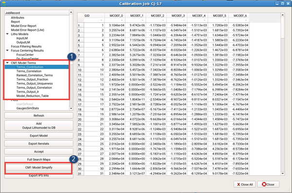
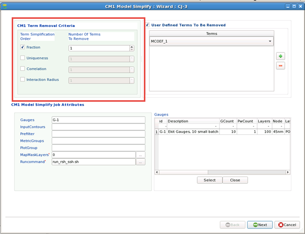

After performing CM1 model analysis, you
may be able to remove less critical terms from the model. Calibre
nmModelflow provides a tool that sets up calibration jobs to test
the removal of one or more terms.
Procedure
- From the
Calibration Job Report, open and use the CM1 Model Terms section
and examine the lists to see model term contributions. The lists
are ordered to show the terms to be removed first at the top of
each list.

Terms_Output_Fraction —
Terms are arranged by their relative contributions to the CM1 profile
at model threshold in ascending order.
Terms_Output_Uniqueness —
Terms are arranged such that the least uncorrelated terms are at
the top of the list. The model is built from the most unique terms
first.
Terms_Output_Correlation —
Terms are arranged such that the pairs of most correlated terms
are at the top of the list. Terms with higher correlation values
with the remaining terms are arranged above terms with lower correlation
values. Among the terms with the same correlation values, terms
with lower contribution come ahead of terms with higher contribution
value.
Terms_Output_Ir —
Terms are arranged by their interaction radii in descending order.
The output list contains three columns: term names, interaction
radii, and relative contributions. If multiple terms have the same
interaction radius, terms with smaller relative contribution to
the CM1 profile are considered less significant and will be removed
before ones with larger relative contributions.
Note: You can use the Model_Reduction_Table entry to look at
a combined summary table of all the items above showing rankings
sorted by type.
- Click CM1
Model Simplify. In the wizard that appears:
- Select
one or more term types based on the list in Step 1 (or User Defined
to select terms manually), and the number of terms to create removal
jobs using that list.

Function
is recommended when you have relatively complex models and have
a calibrated model.
Fraction is
used to remove a relatively small number of terms (up to 5).
Uniqueness
is used to remove a large number of terms (5 or more) while maintaining
a good fit.
Interaction
radius is used to reduce runtime.
Note: The item you choose uses the sorted list of that type for
the order of which terms to remove, from the top of the list down.
For example, choosing Uniqueness and removing three terms creates
jobs that remove the first, second, and third terms from the Terms_Output_Uniqueness
list.
If you chose Interaction Radius and removed three terms, you
create jobs that may remove three different terms, because Calibre
nmModelflow pulls the first three terms from the Terms_Output_Ir
list instead.
Note: SHRINK or SEM_SHRINK terms in the CM1 model are composed
of several sub-terms. Only the full SHRINK or SEM_SHRINK term can
be removed from a model and hence their sub-terms are shown with
the same rank in the Model_Reduction_Table.
(In other words, if you remove three terms and one of them is
a SHRINK term, you generate three jobs, but more than three terms
are removed.) When selecting User Defined terms, selecting a SHRINK
or SEM_SHRINK term also removes all related terms automatically.
- (Optional)
Modify some of the job run conditions (change the gauge set and/or contour
set, add filters, metrics, or plots, and use a different run script).
- Fill out
the Optimizer Settings page as usual for a resist calibration search,
then click Next.
- Inspect
the resulting commands list, then click Finish.
Results
Calibre nmModelflow creates one or more new calibration job entries
for the tests with a format similar to the following:
with Removed term1 [term2 term3 ...] from lithomodel_name
Terms are
removed in an increasing sequence, starting from the top. For example,
if there are six modeling terms and three are requested to be removed,
Calibre nmModelflow generates three jobs, one removing the first
term, a second removing the first and second terms, and a third
removing the first, second, and third terms.
The calibration
jobs created by this task are in Initial state; they have not been
run and need to be run by the user (but do not have to be run separately).
The reduced model always needs to be fully re-calibrated using the
same method for calibrating the input model.
You can run
a CM1 Model Simplify check on a previously completed calibration
job that did not have CM1 model analysis run on it by opening the
Calibration Job Manager and clicking CM1 Model Simplify.
This runs the CM1 Model Analysis command and resets the Calibration
Job Manager for that job run to show CM1 Model Terms statistics. Restart
this task at Step 1.